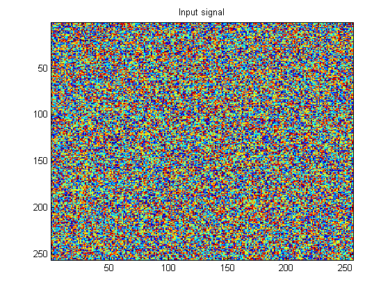

| FRACLAB Functions |
|
Computes the Forward Discrete Wavelet Transform of a 2D signal
WT = FWT2D(X,NL,FILTER1)
WT = FWT2D(...,FILTER2)
[WT, WTI, WTL] = FWT2D(...)
WT = FWT2D(X,NL,FILTER1,0,STRUCT) or WT = FWT2D(X,NL,FILTER1,FILTER2,STRUCT)
WT = FWT2D(X,NL,FILTER1) Computes the discrete wavelet transform, WT, of the input signal X. WT is an orthogonal transform computed using a number of decomposition levels, NL, and the analysis filter, FILTER1. The parameter NL is a positive integer bigger than 1 and should not exceed NL = log2(min(size(x))).
WT = FWT2D(...,FILTER2) Computes the biorthogonal discrete wavelet transform, WT, using a second filter, FILTER2.
[WT,WTI,WTL] = FWT2D(...) Computes the discrete wavelet transform, WT, and returns the vectors WTI and WTL. WTI contains the indexes in WT of the projection the input signal X on the multiresolution subspaces. WTL contains the dimension of each projection.
WT = FWT2D(X,NL,FILTER1,0,STRUCT) or WT = FWT2D(X,NL,FILTER1,FILTER2,STRUCT) Computes the discrete wavelet transform, WT, WTI and WTL using the boolean, STRUCT.
| STRUCT = 1 | The output signal WT is a structure that contains the type of data, WT.type, which is a dwt2d, the discrete wavelet transform, WT.wt, the indexes WT.index and the dimension WT.length. |
x = rand(256,256); q = MakeQMF('daubechies',4);
figure; imagesc(x); title('Input signal');
[wt,wti,wtl] = FWT2Dc(x,3,q);
V = WT2Dext(wt,1,2);
figure; imagesc(V);
title('Multiresolution representation');
% Eliminate the Lowest Frequency component and reconstruct:
index=0;
for i=1:wtl(3,1),for j=1:wtl(3,2), wt(wti(3,4)+index) = 0; end; end;
y = IWT2D(wt);
figure;imagesc(y);
title('Inverse discrete wavelet transform');

| |
FWT | genewei | |